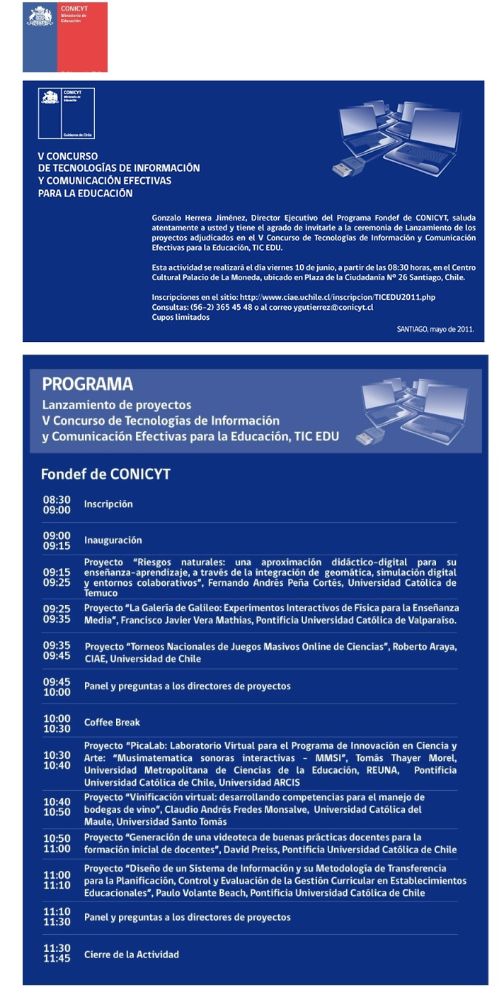

|
Estimado(a) Queremos invitarle a conocer los 7 proyectos adjudicados por el V Concurso del programa FONDEF TIC EDU y que inician sus actividades en el 2011. El Programa de Tecnologías de Información y Comunicación Efectivas para la Educación (TIC EDU) fue creado a fines del año 2002 con la finalidad de contribuir al mejoramiento de la educación chilena y al desarrollo de la industria TIC para la educación. A partir del IV Concurso 2008, el foco del Programa es el mejoramiento de los proceso de aprendizaje. Por lo señalado, queremos invitarle a conocer estos proyectos y generar vínculos con sus directores por posibles acciones futuras de interés mutuo. Los interesados deberán inscribirse en http://www.ciae.uchile.cl/inscripcion/TICEDU2011.php Comisión Organizadora Consultas: (56-2) 365 45 48 o al correo ygutierrez@conicyt.cl  |